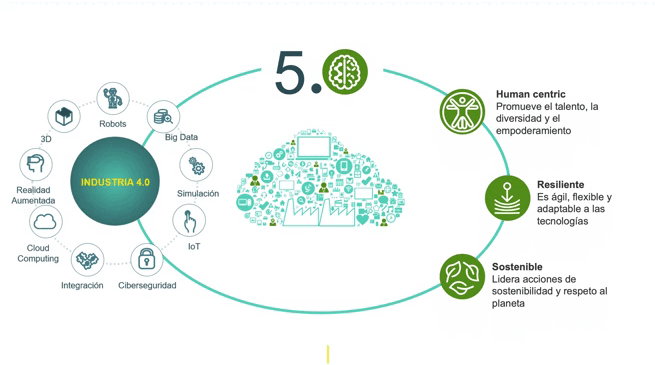

Características de la Industria 5.0
Las industrias son un motor clave de la economía y la prosperidad de un país. Las sociedades se enfrentan a una gran transición y para seguir siendo el motor de la prosperidad, las industrias deben liderar las transiciones humanas, digitales y verdes. Aquí están los enfoques de la industria 5.0:
- Fabricación autónoma
- Enfoque en las experiencias del cliente
- Hiperpersonalización
- Personalización
- Cadena de suministro receptiva
- Producto interactivo
- Centrado en el ser humano
- Resiliencia
- Sostenibilidad
- Valor social
- Artesanía
- Robots colaborativos